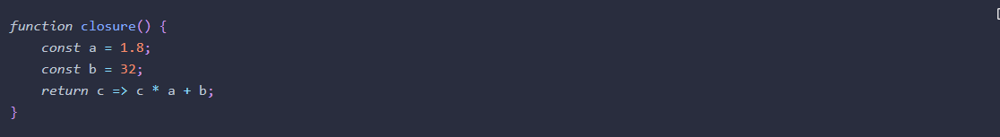
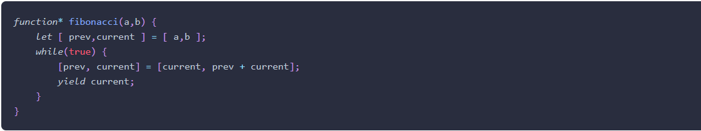

Coding practice
Novice to Ninja Ch.11: Further Functions
Function Properties and Methods
- The call() method can be used to set the value of this inside a function to an object that is provided as the first argument. In the following example, the sayHello() function refers to an unspecific object called this that has a property called name:
- We can create some objects that have a name property, then use the call() method to invoke the sayHello() function, providing each object as an argument. This will then take the value of this in the function:
- If a function doesn’t refer to an object as this in its body, it can still be called using the call() method, but you need provide null as its first argument. For example, we could call the square() function using the call() method, like so:
- The apply() method works in the same way, except the arguments of the function are provided as an array, even if there is only one argument:
Custom Properties
- A useful feature of this is that it provides result caching, or memoization. If a function takes some time to compute a return value, we can save the result in a cache property. Then if the same argument is used again later, we can return the value from the cache, rather than having to compute the result again. For example, say squaring a number was an expensive computational operation that took a long time. We could rewrite the square() function so it saved each result in a cache object that is a property of the function:
- If we try calling the function a few times, we can see that the cache object stores the results:
Initialization Code in IIFE
- An IIFE can be used to set up any initialization code that there’ll be no need for again. Because the code is only run once, there’s no need to create any reusable, named functions, and all the variables will also be temporary. An IIFE will be invoked once, and can set up any variables, objects and event handlers when the page loads. The following example logs a welcome message to the console, then eliminates all the temporary variables used in putting the message together:
- Note that much of this can be achieved in ES6 by simply placing the code inside a block. This is because variables have block scope when const or let are used, whereas in previous versions of JavaScript, only functions maintained the scope of variables. The example above would work just as well using the following code:
Init-Time Branching
- This technique can be used with the feature detection that we discussed in the last chapter to create functions that rewrite themselves, known as init-time branching. This enables the functions to work more effectively in the browser, and avoid checking for features every time they’re invoked. This can be a useful pattern to initialize functions the first time they’re called, optimizing them for the browser being used.
Async Functions
- Async functions were added to the ES2017 specification. These functions are preceded by the async keyword and allow you to write asynchronous code as if it was synchronous. This is achieved by using the await operator before an asynchronous function. This will wrap the return value of the function in a promise that can then be assigned to a variable. The next line of code is not executed until the promise is resolved.
Generalized Functions
- Callbacks can be used to build more generalized functions. Instead of having lots of specific functions, one function can be written that accepts a callback. For example, let's create a function that returns a random integer between two values that are provided as arguments, a and b, or if only 1 argument is provided, it will return a random integer between 1 and the argument provided:
Closure
- A closure is formed when a function returns another function that then maintains access to any variables created in the original function’s scope. In the following example, two variables, a and b, are created in the scope of the closure() function. This then returns an anonymous arrow function that maintains access to the variables a and b even after the closure() function has been invoked: 
- Now we can create a new function by invoking the closure() function and assigning the return value to a variable called toFahrenheit:
- This new function can then be invoked with its own argument, but the values of a and b from the original function are still kept 'alive':
Generators
- ES6 introduced support for generators. These are special functions used to produce iterators that maintain the state of a value.
To define a generator function, an asterisk symbol (*) is placed after the function declaration, like so:

- Calling a generator function doesn’t actually run any of the code in the function; it returns a Generator object that can be used to create an iterator that implements a next() method that returns a value every time the next() method is called.
For example, we can create a generator to produce a Fibonacci-style number series (a sequence that starts with two numbers and the next number is obtained by adding the two previous numbers together), using the following code:  - This new function can then be invoked with its own argument, but the values of a and b from the original function are still kept 'alive':
Novice to Ninja Ch.13: Ajax
Ajax is a technique that allows web pages to communicate asynchronously with a server, and it dynamically updates web pages without reloading. This enables data to be sent and received in the background, as well as portions of a page to be updated in response to user events, while the rest of the program continues to run.
Same-Origin Policy
The same-origin policy in browsers blocks all requests from a domain that is different from the page making the request. This policy is enforced by all modern browsers and is to stop any malicious JavaScript being run from an external source. The problem is that the APIs of many websites rely on data being transferred across domains. Cross-origin resource sharing (CORS) is a solution to this problem as it allows resources to be requested from another website outside the original domain. The CORS standard works by using HTTP headers to indicate which domains can receive data. A website can have the necessary information in its headers to allow external sites access to its API data. Most modern browsers support this method and respect the restrictions specified in the headers.
The Fetch API
- It has since been superseded by the Fetch API, which is currently a living standard for requesting and sending data asynchronously across a network. The Fetch API uses promises to avoid callback hell, and also streamlines a number of concepts that had become cumbersome when using the XMLHttpRequest object.
- The Fetch API provides a global fetch() method that only has one mandatory argument, which is the URL of the resource you wish to fetch. A very basic example would look something like the following piece of code:
As you can see, the fetch() method returns a promise that resolves to the response returned from the URL that was provided as an argument. In the example above, the promise will be resolved when a response is received from the URL 'https:example.com/data'. Because it’s a promise, we can also use a catch statement at the end to deal with any errors that may occur.
File Responses
- The blob() method is used to read a file of raw data, such as an image or a spreadsheet. Once it has read the whole file, it returns a promise that resolves with a blob object. Here is an example of how a file response promise would be resolved:
Creating Response Objects
- Although most of the time you will be dealing with a response object that is returned from a request you make, you can also create your own response objects using a constructor function:

The first argument is the data that is to be returned (for example a text stream, file or JSON data). The second argument is an object that can be used to provide values for any of the properties listed above. These can be useful to use if you are creating an API that needs to send a response, or if you need to send a dummy response for testing purposes.
Request interface
- Request objects are created using the Request() constructor, and include the following properties:
-
Let's take a look at the example below:
The url property is the first argument, and is required. The second argument is an object made up of any of the other properties listed above. Once the Request object is assigned to a variable, it can then be used as the parameter of the fetch() method:
Alternatively, you can enter the URL and object directly as arguments of the fetch() method, without having to create a Request object:
Headers Interface
- HTTP headers are used to pass on any additional information about a request or response. Typical information contained in headers includes the file-type of the resource, cookie information, authentication information and when the resource was last modified.
The Fetch API introduced a Headers interface, which can be used to create a Headers object, which can then be added as a property of Request and Response objects.
A new Headers instance is created using a constructor function, as seen in the example below:
A Headers object includes the following properties and methods that can be used to access information about the headers, as well as edit the header information. has() – Can be used to check if the headers object contains the header provided as an argument.
get() - Returns the value of the header provided as an argument
set() – Can be used to set a value of an already existing header, or create a new header with the value provided as an argument if it does not already exist.
append() – Adds a new header to the headers object.
delete() – Removes the header provided as an argument.
keys(), values() and entries() – Iterators that can be used to iterate over the headers key, values or entries (key and value pairs). -
We can use the Headers, Request and Response objects to put together a typical example that sets up the URL, Request and Headers before calling the fetch() method: